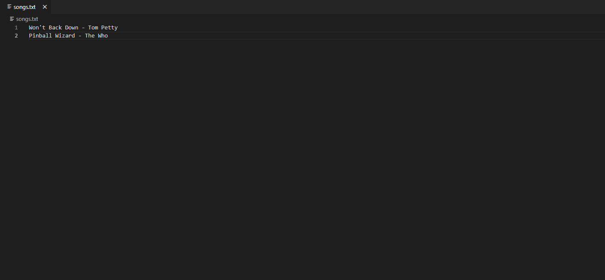
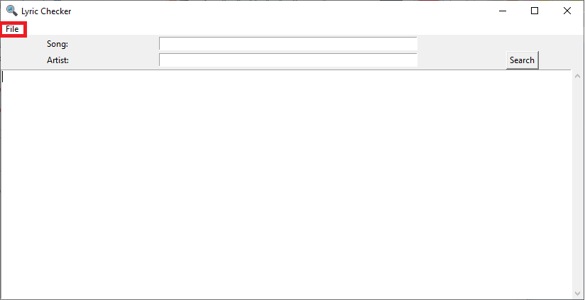
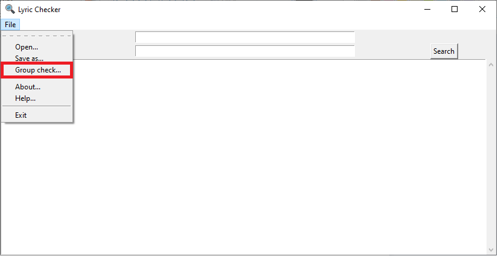
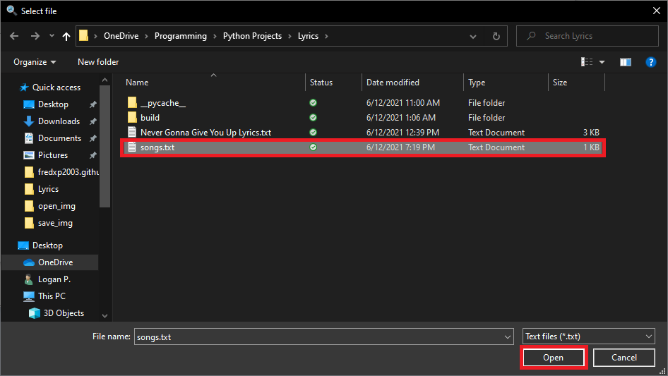
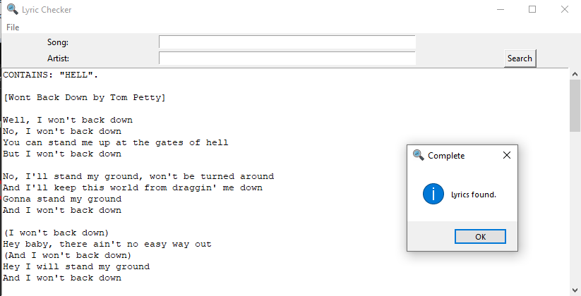

Step 1: Make a text file with as many songs you would like to look up at once. Put the songs in the following format [title - artist]. Spelling doesn't need to be strict, but spelling mistakes may lead to wrong results. In version v1.1, .csv and .xlsx are now compatible file types with Lyric Checker group check. You can make files in Microsoft Excel. Just put the title of the song in the first column, then the artist in the second column.
Step 2: Open the "File" menu.
Step 3: Click on the "Group Check..." menu option.
Step 4: Click on the file containing your songs and click open.
Step 5: The program will find all of the songs that you searched for. This may take a while depending on the amount of songs you requested. Note: If the program says "Not responding", this is a false positive. The program is still working in the background.
